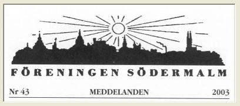

|

På Söder från vaggan till graven
Södra barnbördshuset av Arne Sundström Södra barnbördshuset, eller Södra BB som namnet brukade förkortas, var länge den plats där de flesta nyfödda Södermalmsbor först såg dagens ljus. Ja, det var inte bara blivande mammor från stadsdelen som togs omhand här - år 1902 var Södra BB det allra största barnbördshuset i Stockholm. Då förlöstes på Södra BB 2 210 kvinnor som fick vara här i medeltal 10 dagar, och de gav livet åt 2 069 barn. De två andra barnbördshusen Pro Patria på Norrmalm och Allmänna BB på Kungsholmen betjänade då 386 respektive 1 305 barnaföderskor som födde 366 respektive 1 230 levande födda barn. Tanken på att ordna särskilda sjukvårdsinrättningar för blivande barnaföderskor hade väckts redan i slutet av 1600-talet av den kände hälsovårdspionjären Urban Hjärne. På det 1752 öppnade Serafimerlasarettet inrättades 1755 en liten obstretisk avdelning, där man både tog hand om knepiga förlossningar och undervisade i förlossningsteknik. Behandlingsmetoderna utvecklades sedan snabbt. Redan 1758 gjordes det första kejsarsnittet, som måste ha varit mycket smärtfyllt eftersom inga riktiga bedövningsmedel och antibiotika var kända. Ett första barnbördshus öppnades därefter hösten 1774 av doktor Christian Ramström i hyrda lokaler vid nuvarande Wallingatan. Efter några år av ekonomiska svårigheter övertog välgörenhetsstiftelsen Pro Patria ansvaret, och det fick därefter heta Barnbördshuset Pro Patria. Det tog emot både gifta och ogifta barnaföderskor, antingen avgiftsfritt eller mot en blygsam avgift, och 1778 flyttades detta BB till kvarteret Träsket vid Stora Bastugatan (nuvarande Sveavägen) på Norrmalm. Den 20 februari 1775 hade regeringen beslutat att man också skulle inrätta ett statligt barn bördshus i Stockholm. Det hette först Publica accouchementshuset och hyrde till att börja med rum i von Schulzenheims hus på Riddarholmen. Redan hösten därpå flyttade det till ett hus på Fredsgatan 9, och år 1795 bytte inrättningen namn till Allmänna Barnbördshuset. Det var främst avsett för ogifta fattiga barnaföderskor. Ett problem var att man inte tillräckligt kunde undvika den fruktade barnsängsfebern. Man tvingades därför vid flera tillfällen stänga detta Allmänna BB, och 1841 inrättades provisoriska lokaler i församlingarnas fattighus. För att minska riskerna och kunna ta hand om flera barnaföderskor flyttade verksamheten 1858 till ett nybygge på Hantverkargatan 19.
Där hade staden övertagit en stor fastighet från Prins Carls Uppfostringsinrättning, på vilken man 1874 också började uppföra Maria sjukhus. Genom en uppgörelse med staten flyttade man dit undervisningen av blivande barnmorskor från Allmänna BB. Detta medförde nya lokalbehov, och 1881-82 utökades lokalerna varefter inrättningen fick heta Södra Barnbördshuset. I början av 1900-talet framstod ändå de byggnader som inrymde detta Södra BB som opraktiska och ålderdomliga. Efter ritningar av arkitekt Ernst Stenhammar uppfördes därför 1903-07 en ny förlossningsinrättning inom samma kvarter. Dess personal bestod av två läkare som också var barnmorskelärare, en underläkare, fem barnmorskor, sex sköterskor och en husmor. Ungefär 60 barnmorskeelever bodde på Södra BB och assisterade vid vården av mödrarna. Även de lokaler som Allmänna BB använde framstod som alltför omoderna. Man lyckades få en markupplåtelse på Kungliga Djurgårdens mark, intill den plats där Stadion skulle uppföras och användas vid Stockholmsolympiaden 1912. Ett imponerande stort nytt Allmänna BB byggdes nu efter ritningar av arkitekt Gustaf Wickman, användes först som inkvarteringslokaler vid olympiaden och gjordes sedan i ordning och öppnades 5 januari ,1913. Även Pro Patrias BB flyttade men först i oktober 1930 och då till ett nybygge i kvarteret Guldfasanen vid Thorildsplan, där det drevs vidare ända till 1951. Behovet och lämpligheten av särskilda barnbördshus ifrågasattes dock alltmer, i synnerhet då man fått bättre antiseptiska medel men också utvecklat narkosteknik och andra nya hjälpmedel vid förlossningar, som de stora sjukhusen var bättre lämpade för. Undervisningen av barnmorskor var ändå kvar på Södra BB till 1944, då den flyttade till Södersjukhusets kvinnoklinik.
De senaste åren har det skrivits en hel del om BB-verksamheten vid Södersjukhusets kvinnoklinik. Här inrättades en speciell ABC-avdelning, som gav både förberedelsearbeten till de blivande mödrarna, erbjöd olika förlossningsmetoder och gav eftervård. Denna hotades sedan av nedläggning men verkar nu ha räddats. Det lades också fram förslag om privatisering av delar av verksamheten, eftersom BB-avdelningens kapacitet inte räckte till, särskilt efter avvecklingen av den som funnits vid Nacka sjukhus. Nu har dessa planer lagts på hyllan eller i papperskorgen.
På Södra BB av Anne Marie Rådström Att födas och föda på Södra BB var något att vara stolt över för den genuina söderbon. Agneta Torbjörn-Holmbergh var visserligen inte från Söder, men det var däremot makens familj, så när första barnet Magnus skulle födas 1966 blev det Södra BB. - Det var ju innan det blev självklart att papporna skulle få vara med vid förlossningen, så det blev litet trubbel i starten, säger Agneta. Jaja, vi ska bara förbereda, svarade barnmorskan min man, när han framförde sin önskan att vara med. Men han fick vackert vänta utanför och det var först när vår son var född, som de lät honom komma in. Men nästa gång två år senare var han mera påstridig. När tredje barnet skulle födas 1972 var Södra BB nedlagt. Men det jag minns från Södra BB var annars väldigt positivt. Visst var det strängt. Man fick vackert hålla sig i sitt rum - ja, helst ligga i sängen. Att sitta i något dagrum och se teve var det inte tal om! Inte fick man sköta barnet eller ha den lilla i sängen annat än vid amningstid. Och besökande fick komma på anvisade tider och titta på babyn genom en glasruta. En hel vecka fick man stanna kvar, och visst var det skönt att få vila ut. När jag jämför med hur det är nu för mina döttrar och deras vänner tycker jag, att det var fördelaktigare på min tid. Så väl omhändertagen som man blev. To.m. när det var dags att åka hem höll BB sin vakande hand över mor och barn. Inte fick jag bära babyn till bilen. Inte heller min man. Nej, sa sjuksköterskan som följde oss ut med den lille i famnen, vi har ansvaret för barnet ända tills ni lämnar Södra BB!
- Strängt var det också med vårt eget yttre. Håret skulle vara klippt så att det accepterades, händer och naglar inspekterades, och när ronden gick fick vi inte visa oss. Men vi blev ju bekanta med läkarna när vi fick börja assistera under behandlingen - det var doktor Domeij, doktor Kaplan och så barnläkaren doktor Lund. Under de perioder jag satt i växeln, fick jag hålla reda på deras skor. Det var nämligen så att telefonväxeln var placerad en bit under jord intill entrén, och genom fönstret kunde man precis se skorna på dem som passerade och åt vilket håll i sjukhuset de gick. Jag fick ju hålla reda på var jag skulle söka dem. När någon skaffade nya skor fick man snabbt ta reda på vem de skorna tillhörde ... Men mest var det ren sjukvård som arbetet omfattade. Både som medhjälpare vid förlossning och operation, men framför allt att ansvara för att instrument o. dyl. var sterila. Man hade ju inte engångsartiklar på den tiden. Bukdukar sydde de själva av gasväv; de tvättades och steriliserades efter varje användning. Man kontrollerade dessutom att de inte gått sönder genom att blåsa upp dem. Var de inte helt täta lagades de från avigsidan med en liten gummilapp och solution. - Precis som en cykelslang, småler Kristina som idag är glad för åren av feriearbete och allt hon lärde på Södra BB. Det präglade mitt liv, säger hon, och jag kunde inte tänka mig något annat yrke än inom vården. I dag är Kristina Hägglund sjukhustandläkare i Eskilstuna.
Begravningsplatser för Södermalmsbor av Arne Sundström När jag skulle skriva denna artikel om våra begravningsplatser hade jag först svårt att hitta källmaterial men fann en del härom i en bok som utgavs till Stockholms stadsfullmäktiges 50-årsjubileum 1913. Tekn. dir. Börje Olsson vid stadens Kyrkogårgrvaltning gav mig sedan kopior av den sammanställning som arkivarie Nils Ostman gjorde i januari 1927 och av den innehållsrika skriften till Kyrkogårdsnämndens 100-årsjubileum 1986 Så här var det alltså: Den äldsta ordnade begravningsplatsen på Södermalm var kyrkogården vid S:ta Maria Magdalena kyrka, som började användas ca 1350. Vid den här tiden och långt framåt fick stormän sina gravar inne i kyrkorna, de andra på kyrkogården, men självmördare och ogärningsmän fick ingen plats på vigd jord. I slutet av medeltiden tillkom på Södermalm nästa kyrkogård, vid Helga Korsets kapell nära Götgatan. Detta kapell efterträddes sedan av Stora kapellet ("Sturekapellet"), vars kyrkogård därefter 1657 övertogs och utökades för Katarina kyrka. Efter reformationen såg Gustav Vasa till att den nya protestantiska kyrkan skulle ha bra gravplatser för sina avlidna. Han utfärdade därför ett förbud mot att ha marknadsplatser och hålla kreatur på kyrkogårdarna, vilket tidigare förekommit. I samband med att Gustav Vasa inrättade Danviks Hospital skapades också 1551 en särskild kyrkogård för hospitalet på ett område i öster, mellan Folkungagatan och Bondegatan. Där fanns till slut plats för 935 gravar. I början av 1700-talet drabbades landet av en svår pestepidemi. Da ordnades två områden med så kallade pestgravar på Södermalm, som användes 1710-1711. Den ena låg i Årstalunden, vid Tantogatan, och den andra i Grinds Hage, inom Eriksdalslunden.
Där var både födan och de hygieniska förhållandena usla, och många drabbades av "lantvärnssjuka", ofta en form av dysenteri. De soldater som återkom till Stockholm förde med sig denna sjuka, och många avled hastigt. För dem ordnades nu en begravningsplats i två avdelningar, en för militärer och en för politielik, vilket betydde "avlidna arrestanter" och "betydelsefullare ur stans sjöar upptagna lik samt å gator och i uthus funna döda". Redan 1790 begravdes också sådana på Långholmens västra udde. Den nya "Begravningsplatsen för militärer och politielik" förlades öster om Stora landsvägen utanför Skanstull, på mark som Stockholms stad arrenderade av Enskede gård, och invigdes 19 januari 1809. Ansvarig för den blev stadens drätselkommission. Redan dessförinnan hade det alltså blivit svårt att hitta gravplatser vid kyrkorna för alla andra avlidna, och det inte bara i Stockholm. Den 18 oktober 1815 utfärdades därför ett påbud att man skulle upphöra med begravningar på de gamla kyrkogårdarna och i stället anlägga nya kyrkogårdar utanför städerna, och så hade redan skett vid flera städer. För Stockholms del uppläts ett område av Karlbergs kungsgård till en allmän begravningsplats för Stockholms försam lingar samma dag som påbudet kom. Den fick heta Norra begravningsplatsen och invigdes 9 juni 1827 av Johan Olof Wallin. Arrendet av begravningsplatsen utanför Skanstull hade upphört 1826, men bara några år därefter framkom ett nytt behov av en sådan avskild plats. Åren 1830-31 nådde nämligen en svår koleraepidemi fram till Europa. Vårt land var länge förskonat från den dödsbringande sjukdomen, men förberedelser gjordes ändå här genom att skapa särskilda "kolerakyrkogårdar" på flera platser utanför staden. För Södermalms del innebar detta att man 27 juli 1831 träffade ett nytt avtal med Enskede gård om att få använda den gamla platsen utanför Skanstull, nu utvidgad och ordnad med ett särskilt dödgrävarboställe. På sensommaren 1834 nådde kolerasmittan Stockholm, och på mindre än två månader avled 3 665 av stadens befolknining, var av ca 1 000 på Södermalm. Det föreskrevs att likkistorna med de döda skulle ställas ut i portgångarna, varifrån de hämtades nattetid. Nätterna igenom hörde man sedan skramlet av vagnar som förde bort kistorna som skulle begravas klockan åtta följande morgon, med upp till 16 kistor i varje grav. Arbetet vid Skanstull utfördes av korrektionister från Långholmen och stadsbåtsmän. Under vintern upphörde koleraepidemin och återkom först 1853. Denna gång fortsatte epidemin ända till 1859 och 1866 kom en ny omgång, men denna blev sista gången staden drabbades så.
Hur förvaltningen av Norra begravningsplatsen skulle skötas och finansieras blev sedan en lång varig tvistefråga, som löstes först 1886 då riksdagen bestämde att Stockholm skulle ha en särskild kommunal kyrkogårdsnämnd för stadens begravningsplatser. Av dess åtta ledamöter skulle staden tillsätta fyra och de berörda kyrkostämmorna fyra. Även den södra begravningsplatsen, som nu kom att kallas Skanstulls begravningsplats, sköttes sedan av denna förvaltning. Det behövdes dock fler gravplatser, och 1890 övertog staden från Enskede gård ett nytt område vid Sandsborg som fick heta Södra begravningsplatsen och invigdes 9 juni 1895.
Kyrkans arkitekt Ivar Tengbom menade då att man istället borde uppföra en arkadbyggnad på planen vid kyrkans norra sida. Den 4 juni 1939 invigdes så denna urnlund med konstnärlig utsmyckning av Arvid Fougstedt och Ivar Johnsson. En utvidgning i samma stil norr därom beslutades sedan. Den blev klar 1959. De senaste årtiondena har man vid de olika kyrkogårdarna också ordnat markytor, där de avlidnas aska strös ut.
Verksamhetsberättelse 2002 Årsmötet hölls den 12 mars kl. 18.30, på Södergården, Götgatan 37. Före mötet samlades vi i Blå Salongen där de 37 närvarande medlemmarna bjöds på kaffe och kaka. Efter sedvanliga årsmötesförhandlingar talade Bengt Ringberg om "Överblivna eländen", varefter Sångsällskapet "De Svenske" avslutade med musik i dagens ämne.10 mars gästade vi den Judiska Synagogan Adat Jisrael på S:t Paulsgatan 13, där vi fick en intressant föredragning om synagogans historia, dess traditioner och verksamhet. 16 mars gick vi till den kristna Allhelgonakyrkan i Helgalunden, där Birgitta Östergård visade kyrkan och Föreningen sedan bjöd på kaffe i lokalen under kyrkan. 13 april besökte vi den muslimska Moskén vid Björns Trädgård. Vi visades runt i lokalerna och fick kunskap om muslimska traditioner och ritualer. 22 april var det dags för en kortare sjötur med Djurgårdsfärjan till Allmänna Gränd på Djurgården. Där mötte fil.dr. Margareta Cramér och tog oss med på en rundvandring bland Djurgårdsstadens gränder och hus och Hembygdsföreningens stuga vid Skampålens torg. 6 juni gick årets båtfärd. Denna gång med Ejdern från Riddarholmskajen för färd mot Södertälje i den klassiska mälarleden. 12 oktober besökte vi Norska kyrkan på Stigbergsgatan. Vi bjöds på kaffe och våfflor innan vi började rundvandringen under sakkunning ledning. 9 november Cecile Stenbock med musiker och dansare bjöd på en fantastisk show med söderanknytning, Lignagatan 6. Efteråt åt vi buffet. 20 november En intressant föredragning om Frälsningsarmens globala och lokala historia fick vi på Söderkåren, Hornsgatan 96. 28 november besökte vi Ersta-Sköndals Högskola (f.d. Sjöbefälsskolan) på Stigberget. Direktor Göran Agrell, ansvarig för Stockholms Teologiska Institut, och rektor Tomas Lindström berättade om verksamheten och byggnaden och byggnadens historia, varpå vi gjorde en rundvandring i huset. 23 januari 2003 stod Stadsmuseet på tur. Fil. dr. Åke Abrahamsson berättade om Södra Stadshusets historia och vi fick en rundvandring genom detta intressanta hus. Under året har ingen Kasper staty delats ut.
Styrelsen har under året haft 6 möten och bestått av: Övriga styrelseledamöter: Pauline Berg, Gun Jansson, Göran Kant, Ragnar v.Malmborg, Edward W Nilsson, Staffan Sjöden. Sonja Eriksson, sekreterare
För att förenkla rutiner och hålla nere kostnaderna, sköter styrelsen medlemsregister och posthantering. Kom ihåg
att fylla i namn, adress och belopp på inbetalningskortet. Medlemsavgiften för 2003 är 100:-. (Ständigt
medlemskap 750:-) Har du några frågor eller förslag, kontakta medlemsansvarig. Kom också ihåg att anmäla adressändring.
Medlemsansvarig: Kent Smith, Erstagatan 14, 116 36 Stockholm, tel. 6436946
Har du förslag på intressanta och roliga aktiviteter?
Kallelse till årsmöte Söndag 16 mars kl 15.00 Årsmöte i lokalen Expo, Sickla Industriväg 9, Nacka (Saltsjöbanan avgår från Slussen kl 14.45, gå då av vid Sickla station kl 14.50. En rad Nackabussar avgår också från Slussen, t ex nr 419 kl 14.30, nr 410 kl 14.38 och nr 401 kl 14.40; gå då av vid Sickla Bro.) Bjarne Hanson från Föreningen Sicklaslussen berättar om hur Sicklaområdet omvandlats och hur farleden upp till Nackasjöarna nu återställts. Årsmötesförhandlingar. Kaffeservering. Försäljning av biljetter till utflykten 10 juni som går till Saltsjö-Duvnäs.
Söndag 27 april kl 16.00
Onsdag 7 maj kl 18.30
Tisdag 10 juni kl 18.00
Söndag 17 augusti kl 14.00 |